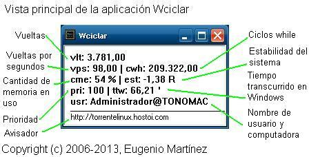

Podría definirse a Wciclar como un instrumento de
medición de su velocidad de ejecución en
Windows.
Es un programa de 32 bits para Windows 32/64 bits.
Esta aplicación se acoge a la
licencia pública GNU también
conocida como GPL. Haga clic
aquí para leer la licencia.

Viene acompañado de un fichero de configuración llamado wciclar.ini, su contenido podría ser el siguiente:
[wciclar] intervalo=3 prioridad=normal estilo=normal sonido=normal salida=normal origen_x=536 origen_y=-26 ancho=224 alto=132 ; ; Nuevo: canal alfa, para visualizar la ventana translúcida. alfa=75 ; linea_texto_1=¿ Cómo se despertó la bella durmiente ? linea_texto_2=* Un gallo le cantó al oído y le quedó... linea_texto_3=...zumbando durante muchos días *** ; ; Fin de wciclar.ini ;
Los campos de la sección [wciclar] son:
intervalo: expresa el tiempo, en segundos, que actualizará la información en la ventana. Puede comenzar desde 1 en adelante.
prioridad: indica la prioridad que tendrá la aplicación. Los nombres aceptados son: normal, alta, muy alta, baja, encima de lo normal y debajo de lo normal.
estilo: indica la apariencia de la ventana. Los nombres aceptados son: normal y superior.
sonido: indica la emisión o no de un efecto sonoro. Los nombres aceptados son: normal, silencio, tic y mpop.
salida: indica el modo de salir de wciclar. Los nombres aceptados son: normal, rápida y rapida.
origen_x: posición sobre el eje X expresado en pixels. Es un valor de 32 bits. Se aceptan a los valores negativos.
origen_y: posición sobre el eje Y expresado en pixels. Es un valor de 32 bits. Se aceptan a los valores negativos.
ancho: ancho de la ventana expresado en pixels. Su rango de valores van desde 1 hasta 320.
alto: altura de la ventana expresado en pixels. Su rango de valores van desde 1 hasta 240.
alfa: para visualizar la ventana translúcida. Su rango de valores van desde 0 % hasta 100 %.
linea_texto_1: permite la visualización de una línea de texto de hasta 65 caracteres en la zona inferior de la ventana. Este campo puede repetirse hasta tres veces.
Caracter ';': es el caracter comentario, todo lo que está escrito después de ';' es ignorado.
También acepta argumentos enviados desde la línea de comandos, para conocerlos ejecute wciclar desde Símbolo del sistema de la siguiente manera: wciclar ayuda.
Y aparecerá en la pantalla un cuadro de diálogo explicando brevemente los diferentes argumentos que se aceptan.
La rapidez de Windows se manifiesta cuando se observa a vps alcanzando el valor 100 o 64, según la versión del sistema operativo que se esté usando, a cwh con valores bajos y a est con valores negativos.
Copyright © 2006-2020 Eugenio Martínez.Dirección de contacto: torrentelinux@gmail.com. Sitio: sites.google.com/site/torrentewindows/home